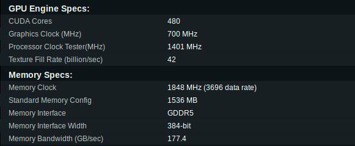

Placa Gráfica GeForce GTX 480
Principais caracterísicas
♦ The Fermi Architecture"A família de gráficas GeForce GTX 400 baseia-se na arquitetura Fermi da NVIDIA. Isto é o salto mais significativo na arquitetura GPU desde o Nome do processador gráfico presente na família das placas gráficas anteriores à serie GT200 (G80) original. O Nome do processador gráfico presente na família das placas gráficas Gtx 200 (GT200)(placa gráfica tambem utilizada) estendeu o desempenho e a funcionalidade do G80. Com o Fermi, adquirimos tudo o que aprendemos com os dois processadores anteriores, analisamos as várias aplicações e desenvolvemos uma arquitetura completamente nova otimizada para jogos e aplicativos da próxima geração."
♦ Realtime Raytracing"O rastreamento de raios produz imagens com reflexões e refracções perfeitas, sombras precisas e iluminação fotorealística. É a técnica de renderização de escolha para profissionais de gráficos, mas até agora, limitou-se a aplicativos não em tempo real. Graças à arquitetura de computação avançada da Fermi, as GPUs GeForce GTX 400 são capazes de executar o rácio do raio em tempo real, até 15 quadros por segundo(framerate). Para um realismo visual ainda maior, a GPU também pode executar o caminho para a verdadeira iluminação global. Os resultados são imagens tão refinadas que são indistinguíveis de cenas em filmes gerados por computador."
♦ PhysX"PhysX é o único motor físico que utiliza o poder da GPU para a computação física. Usado pelo onipresente Unreal Engine, é um programa de computador e/ou conjunto de bibliotecas para desenvolvimento de jogos (Unreal Engine), o PhysX esteve na vanguarda ao trazer efeitos simulados fisicamente para os jogos. O segredo do PhysX é o poder da GPU. Com a Fermi, procuramos adquirir ainda mais os limites da física do GPU. Não só duplicamos o número de núcleos CUDA na geração anterior mas também criamos uma nova arquitetura de cache que fornece enorme largura de banda no chip. O resultado é um desempenho e uma eficiência grandemente aprimorados. As simulações de física com mais de cem mil partículas podem ser alcançadas em tempo real."
